DevSecOps 概述
什么是 DevSecOps
- 将安全集成到 DevOps 流程里
- DevSecOps 提倡“安全是一种共同责任”的文化，每一个人都要对安全负责
- DevSecOps 的目标是在软件开发的早期阶段集成安全控制
- 安全左移，尽早发现和解决安全问题,，而不是在实施和运维阶段
安全左移
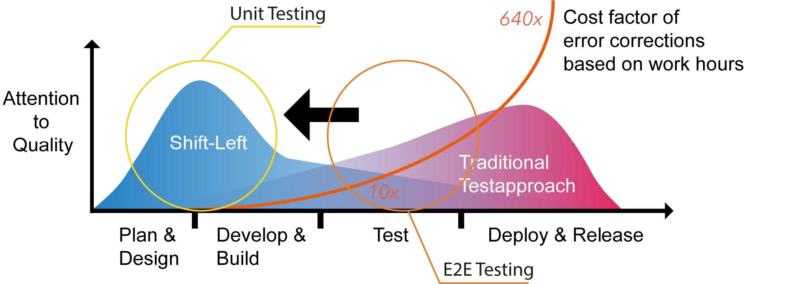
DevOps 工作流
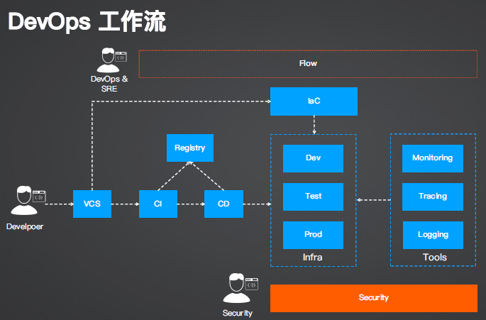
DevSecOps 工作流
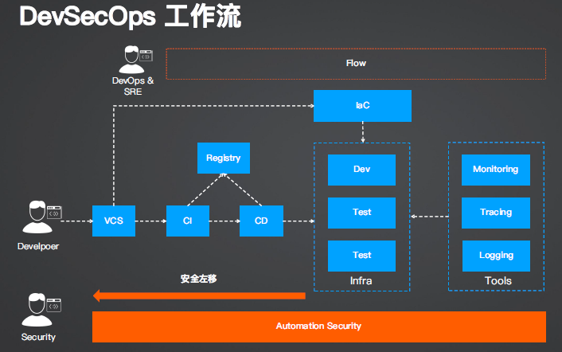
加固 DevOps 的每个阶段
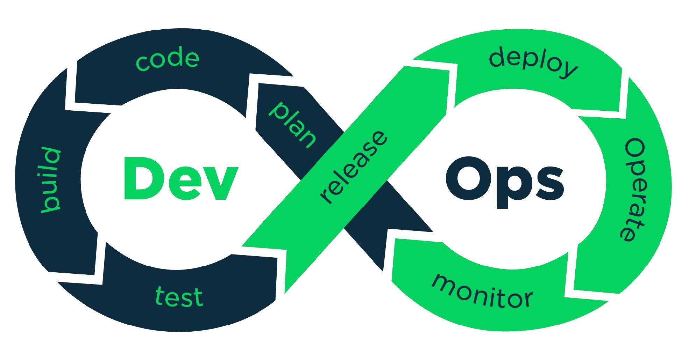
SAST & DAST & IAST
-
SAST：静态应用程序安全测试
- “白盒测试”方式，测试应用程序内部结构或者工作方式，而不是功能
- 源码级别的安全扫描，例如 SonarQube
-
DAST：动态应用程序安全测试
- “黑盒测试”方式，在程序运行时候对其进行扫描
- 例如测试产品中的 SQL 注入攻击、越权访问、凭据伪造等
- 例如 OWASP Zap
-
IAST：交互式应用程序安全测试
- 使用软件来检测应用程序的漏洞，可运行自动化的安全测试
- 可以理解为 SAST 和 DAST 的结合
- 可以在 IDE、CI、Staging 和 Prod 环境下进行
云原生自动化安全工具
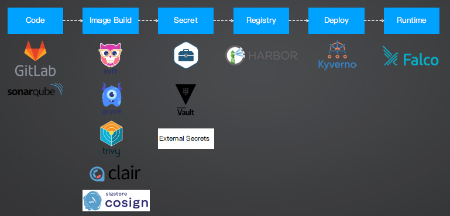
安全自测表：云原生安全的 4C
-
Cloud
-
云基础设施安全最佳实践
- 子账户
-
外部网络访问限制
- VPC
- 安全组
-
系统运维配置
- 禁止 root 登录、访问控制、防火墙、SSH 配置
-
-
Cluster
-
集群安全
- 认证、授权、RBAC
-
安全策略
- 网络访问策略、admission controller
-
审计
- 审计日志
-
容器安全运行时
- Kata container、gVisor
-
-
Container
-
清单文件安全
- Manifest、Docker file
-
容器镜像软件供应链
- 可信镜像、容器安全漏洞扫描
-
容器访问
- 容器用户、容器文件系统权限、特权容器
-
-
Code
- 编程语言安全最佳实践
- 静态扫描
- 第三方依赖包安全
代码和软件供应链安全
代码的分类
-
开发编写的业务代码（20%）
- 静态扫描：SonarQube
-
第三方依赖包（80%）
- 漏洞扫描：CVEs(Common Vulnerabilities and Exposures，通用漏洞披露)
CVEs
-
公认的标准
-
用于公开、分类和共享计算机系统中的安全漏洞信息
- https://cve.mitre.org
-
每一个 CVE 标识（例如：CVE-2023-1234）都对应一个特定的安全漏洞
-
可通过搜索来所使用的第三方包是否有安全漏洞
-
例子：https://cve.mitre.org/cgi-bin/cvename.cgi?name=CVE-2022-47762
其他特定语言的漏洞数据库
-
PHP
- https://github.com/FriendsOfPHP/security-advisories
-
Python
- https://github.com/advisories?query=ecosystem%3Apip
- https://github.com/pyupio/safety-db
-
Ruby
- https://github.com/rubysec/ruby-advisory-db
-
Node.js
- https://github.com/nodejs/security-wg
-
Go
- https://gitlab.com/gitlab-org/advisories-community
- https://github.com/golang/vulndb
-
Rust
- https://aquasecurity.github.io/trivy/v0.19.2/vulnerability/detection/data-source/(https://github.com/RustSec/advisorydb)
-
.NET
- https://github.com/advisories?query=ecosystem%3Anuget
SBOM：软件 BOM 的标准格式
- Linux 基金会：SPDX
- OWASP（开放网络应用安全项目）：CycloneDX
- 微软：SARIF
- GitHub：Open Source Vulnerability format
Demo1：使用 Trivy 导出 SPDX SBOM
cd iac/week-2/demo-app/result
trivy fs ./ --format spdx-json --output trivy-spdx.json
查看 trivy-spdx.json, 查找 express
Demo2：使用 Trivy 扫描 SBOM
trivy sbom ./trivy-spdx.json
# 直接扫描
trivy fs ./
# 质量门禁：发现漏洞并设置退出码
trivy fs ./ --exit-code 1
在 CI 里使用 Trivy
Jenkins
使用镜像：aquasec/trivy
在 Pod 里运行 trivy 命令
Tekton
使用 Step：https://hub.tekton.dev/tekton/task/trivy-scanner
在 Dockerfile 里使用 trivy（多阶段构建）
[...]
# Run vulnerability scan on build image
FROM build AS vulnscan
COPY --from=aquasec/trivy:latest /usr/local/bin/trivy /usr/local/bin/trivy
RUN trivy filesystem --exit-code 1 --no-progress /
[...]
注意事项：关于 SBOM 的存储
Harbor
暂时不支持将 SBOM 附加到镜像中
https://github.com/goharbor/harbor/issues/16186
注意事项：SPDX 格式适配问题
-
syft ./ --output spdx-json --file syft-spdx.json
- docker sbom 命令使用的是 syft 工具生成 SBOM
-
trivy sbom ./syft-spdx.json
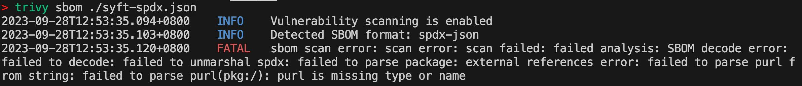
镜像安全
Dockerfile：可信基础镜像（官方、无安全漏洞）。运行用户（慎用 root）。
系统应用包：注意安全漏洞。OpenSSL、Curl、Etc.
镜像扫描：Trivy。Grype
镜像签名：Cosign
Demo3：导出镜像所有 SBOM 并扫描
- trivy image --format spdx-json --output spdx-image-result.json lyzhang1999/result:env
- 查看 spdx-image-result.json
- 搜索 express（应用第三方依赖包）、curl（镜像应用包）
扫描 SBOM
- trivy sbom ./spdx-image-result.json
直接扫描本地 Docker 镜像（生成 SBOM 并扫描）
- trivy image lyzhang1999/result:env
其他镜像扫描工具
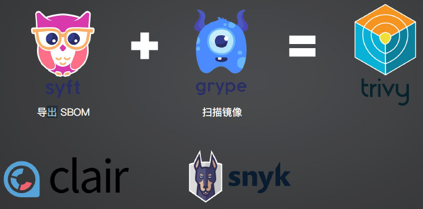
注意事项：扫描工具的对比和选型
https://github.com/aquasecurity/trivy-db/tree/main/pkg/vulnsrc
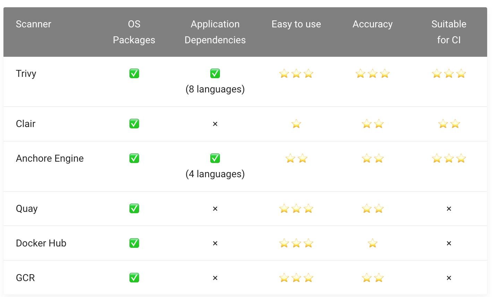
镜像漏洞和 Harbor
- 通过开启 Harbor “阻止潜在漏洞镜像” 开关阻止漏洞镜像部署到集群内
- 推送镜像的后置行为，建议前置到 CI，发现漏洞则 CI 失败，且不推送镜像
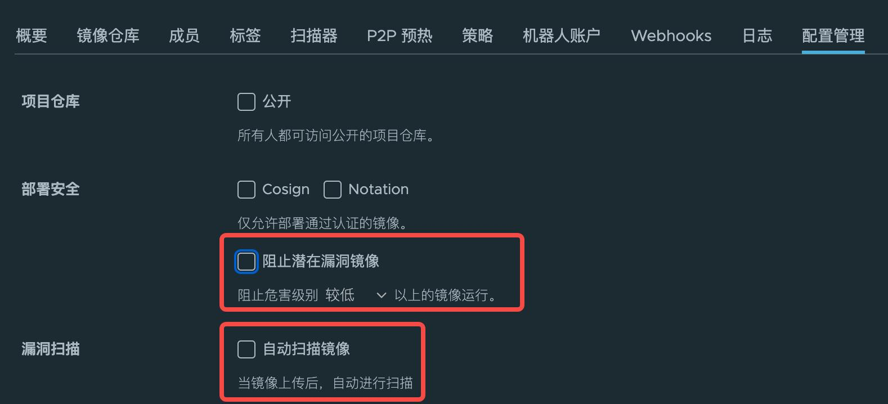
Demo4：镜像签名
-
生成密钥对
- cosign generate-key-pair
- 输入密码，例如：password123
-
签名镜像（远端镜像）
- COSIGN_PASSWORD=password123 cosign sign harbor.wangwei.devopscamp.us/vote/worker:aff746b5e5948d31b0958bac98adf89d7f6dac8c --key cosign.key -y
- key 可以从 Vault、Kubernetes Secret、AWS 等读取
-
查看 Harbor 签名状态
密钥存储安全
K8s Secret 的不足
- Secret 以明文方式存储，容易导致凭据泄露
- 无法跨命名空间共享
GitOps 中 Secret 管理模式
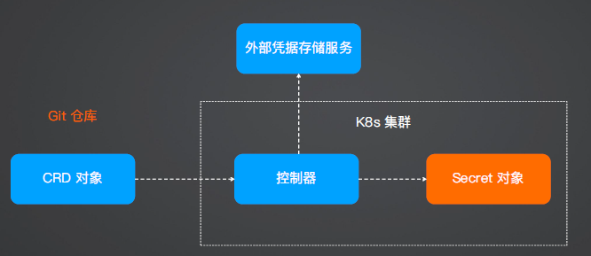
Secret 加密工具
-
Sealed-Secrets
-
External-Secrets
- Vault
- AWS Secrets Manager
- Google Secrets Manager
Sealed-Secrets
-
cd iac/week-7/demo-1/setup && terraform init && terraform apply
-
安装 kubeseal
- brew install kubeseal
- 确保 kubeseal 能访问集群：export KUBECONFIG="$(pwd)/config.yaml"
-
基于现有密钥生成
- kubeseal -f image-pull-secret.yaml -w image-pull-sealed-secret.yaml --scope cluster-wide
- 查看 image-pull-sealed-secret.yaml
-
将加密后的密钥部署到集群
- kubectl apply -f image-pull-sealed-secret.yaml
- 查看 sealed-secrets 创建的密钥：kubectl get secret regcred -o yaml
SealedSecret 对象的作用域
-
strict：默认作用域，SealedSecret CRD 必须和原始的 Secret 对象具有相同的「名称」和「命名空间」，修改 CRD 的其中任何一个属性都将导致解密失败（防止恶意攻击）
- 意味着 CRD 生成之后，不允许修改名称，并且和命名空间强绑定
-
namespace-wide：允许在特定的命名空间下重命名 SealedSecret CRD
- kubeseal -f image-pull-secret.yaml -w image-pull-sealed-secret.yaml --scope namespace-wide
-
cluster-wide：允许在任何命名空间下解密密钥以及重命名
- kubeseal -f image-pull-secret.yaml -w image-pull-sealed-secret.yaml --scope cluster-wide
SealedSecret 原理
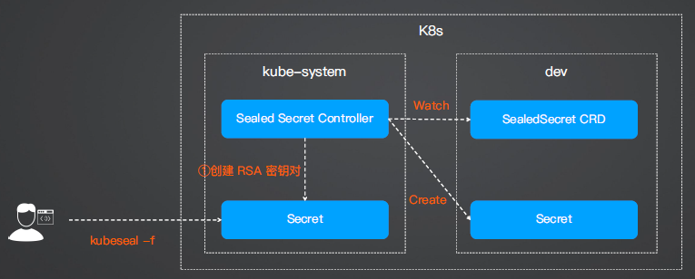
Demo2：管理现有 Secret 对象
-
部署 iac/week-7/demo-2/secret-existed.yaml 模拟 Secret 对象已存在的情况
-
创建 kubeseal -f secret-existed.yaml -w secret-existed-seal.yaml 并部署到集群
-
查看 SealedSecret 日志：Resource "example-secret" already exists and is not managed by SealedSecret
-
为 Secret 添加注解：sealedsecrets.bitnami.com/managed: "true"
- kubectl patch secret example-secret -p '{"metadata":{"annotations":{"sealedsecrets.bitnami.com/managed":"true"}}}'
-
删除 CRD 并重新创建，此时 SealedSecret 将会接管已有 Secret 对象
- kubectl delete -f secret-existed-seal.yaml
- kubectl apply -f secret-existed-seal.yaml
注意事项
位于 kube-system 的 RSA Secret 应妥善保管，如丢失将导致密钥无法解密
- 备份密钥（灾备）：kubectl get secret -n kube-system -l sealedsecrets.bitnami.com/sealedsecrets-key -o yaml >main.key
- 集群迁移和恢复（在控制器启动前执行）：kubectl apply -f main.key
- 如在控制器之后部署了密钥，则需要删除 Pod：kubectl delete pod -n kube-system -l name=sealedsecrets-controller 使其生效
- 使用自定义 RSA 密钥对：https://github.com/bitnami-labs/sealed-secrets/blob/main/docs/bringyour-own-certificates.md
External Secrets + Vault
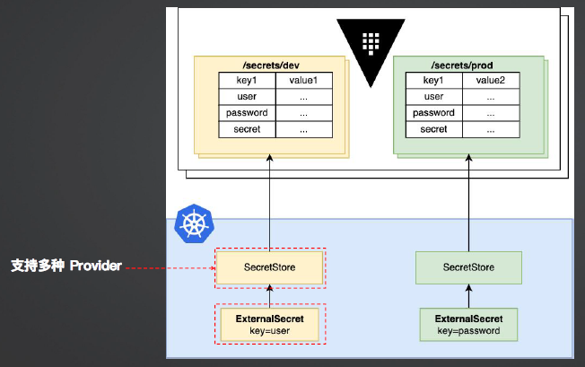
Demo3：External Secrets + Vault
- 步骤详见：iac/week-7/demo-3/README.md
- 创建完成后，尝试修改 vault 的密钥，15s 后查看 secret 是否同步
将已有的 Secret 对象推送到 Valut
apiVersion: external-secrets.io/v1alpha1
kind: PushSecret
metadata:
name: pushsecret-example
spec:
refreshInterval: 10s # 刷新时间
secretStoreRefs:
- name: secret-store-vault
kind: ClusterSecretStore
selector:
secret:
name: example # 要推送的 K8s secret 名称
data:
- match:
secretKey: secret_data # 要推送的 K8s Secret key
remoteRef:
remoteKey: k8s/example # Vault path
部署安全
部署安全的两种做法
部署安全：前置
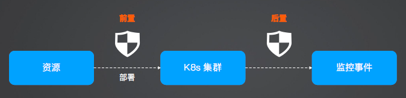
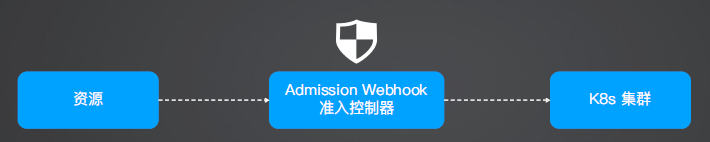
Admission Webhook
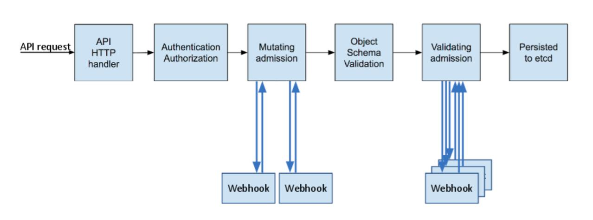
Demo4：从零构建 Admission Webhook
参考 iac/week-7/demo-4/README.md
继续深入 Admission Webhook
- 增加校验逻辑需要增加新的代码
- 是否有更通用的 Admission Webhook？
Kyverno
Kyverno 架构图
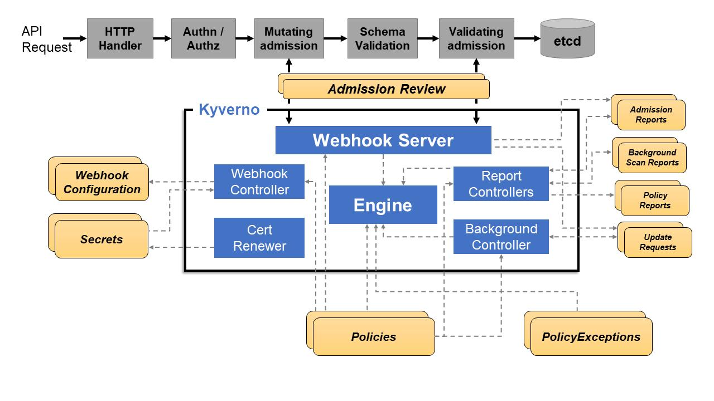
Demo5：安装 Kyverno 和配置策略
kubectl create -f https://github.com/kyverno/kyverno/releases/download/v1.10.0/install.yaml
kubectl create -f- << EOF
apiVersion: kyverno.io/v1
kind: ClusterPolicy
metadata:
name: require-labels
spec:
validationFailureAction: Enforce
rules:
- name: check-owner
match:
any:
- resources:
kinds:
- Deployment
validate:
message: "label 'owner' is required"
pattern:
metadata:
labels:
owner: "?*"
EOF
Kyverno 常用 Policies
-
禁止部署非内部制品库的镜像
- iac/week-7/demo-5/deployment-registry.yaml
-
禁止部署 latest 的镜像版本
- iac/week-7/demo-5/image-tag-policy.yaml
-
禁止使用 NodePort 暴露服务
- iac/week-7/demo-5/disallow-nodeport.yaml
-
要求提供 resource 资源配额
- iac/week-7/demo-5/required-resource.yaml
更多官方开源 Policy：https://kyverno.io/policies
部署安全：后置
Falco：云原生运行时安全监控工具
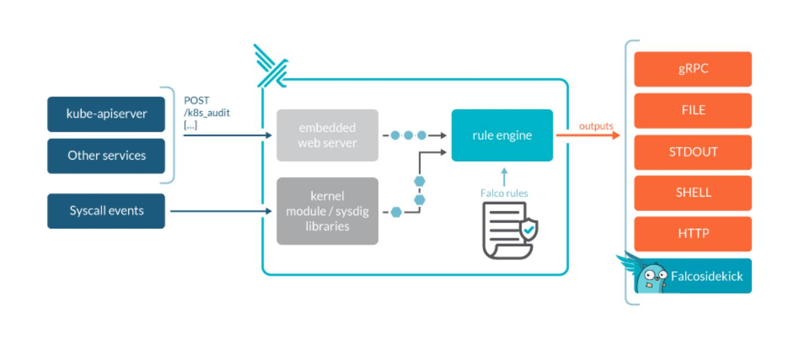
Falco 事件采集原理
- （默认）基于 libscap 和 libsinsp C++ 库构建的内核模块，从 Linux Ring Buffer 获取系统事件
- 通过 eBPF 探针获取事件
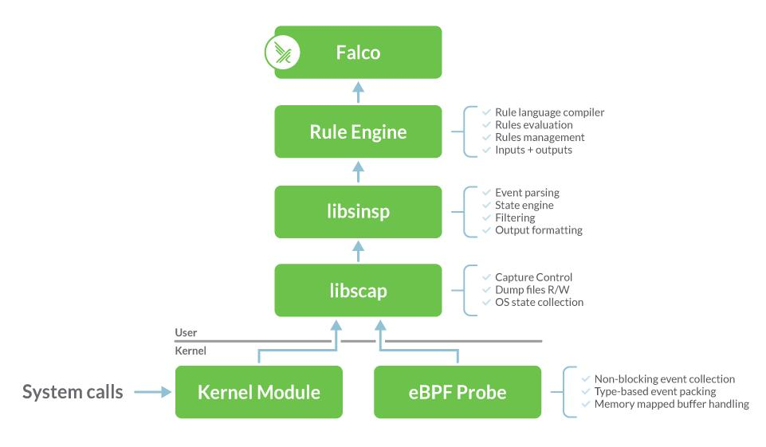
Demo6：安装和使用 Falco
-
添加 Helm 仓库
- helm repo add falcosecurity https://falcosecurity.github.io/charts
- helm repo update
- helm install falco -n falco --set driver.kind=ebpf --set tty=true falcosecurity/falco
- kubectl get pods -n falco
-
运行 alpine 镜像
- kubectl run alpine --image alpine -- sh -c "sleep infinity"
-
模拟安全事件（执行一段 shell 命令）
- kubectl exec -it alpine -- sh -c "uptime"
-
查看 Falco 输出的日志
- kubectl logs -l app.kubernetes.io/name=falco -n falco -c falco | grep Notice
建议监控的高危安全事件
- shell、bash、zsh、sh 命令操作
- ssh 登录
- 用户和密码操作：useradd、usermod、passwd、adduser、addgroup......
- 提权操作：sudo、su、suexec
- 导出数据操作：pg_dumpall、mysqldump
- VPN 操作：openvpn
- 定时命令：crontab、cron
- 查看和删除日志
- Linux Kernel Module 注入检测
Falco Rules 编写
- rule: shell_in_container
desc: notice shell activity within a container
condition: >
evt.type = execve and # https://falco.org/ml/docs/reference/rules/supported-fields/
evt.dir = < and
container.id != host and
(proc.name = bash or
proc.name = ksh)
output: >
shell in a container
(user=%user.name container_id=%container.id container_name=%container.name
shell=%proc.name parent=%proc.pname cmdline=%proc.cmdline)
priority: WARNING
Falco 默认 Rules
- 默认：https://github.com/falcosecurity/rules/blob/main/rules/falco_rules.yaml
- sandbox rules：https://github.com/falcosecurity/rules/blob/main/rules/falco-sandbox_rules.yaml
- incubating rules：https://github.com/falcosecurity/rules/blob/main/rules/falcoincubating_rules.yaml
Falco + Argo Workflow 自动处理安全事件
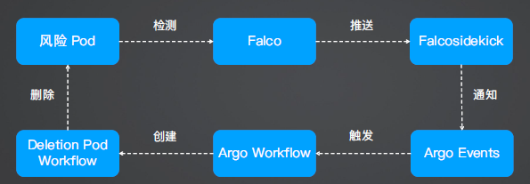